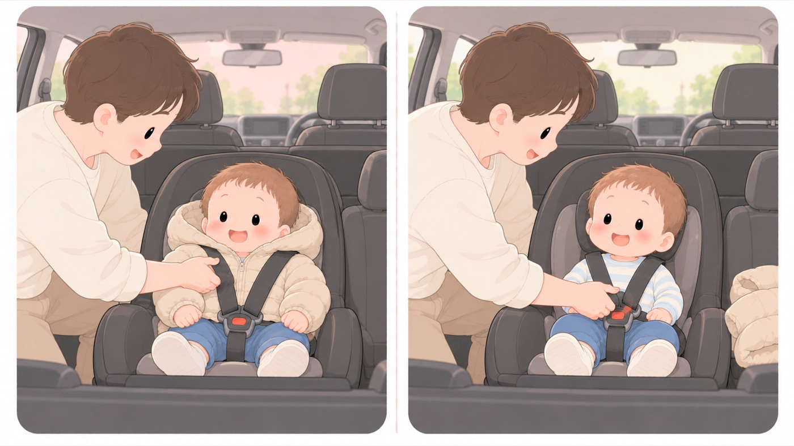

車に乗せる
チャイルドシートの切り替え
後ろ向きをいつまで続けるか。正しく使えているか
6歳未満のチャイルドシート使用は法律上の義務です。この時期に迷うのは前向きへの切り替えで、i-Sizeチャイルドシートの国際基準R129の呼び名。首の発達を守るため、生後15か月までは後ろ向きでの使用が義務づけられている。対応の製品では首の発達を保護するため、生後15か月までは後ろ向きでの使用が義務づけられています。そのあとも、製品の対象体格の範囲内なら後ろ向きを続けられます。

左は危険な例、右は安全な例です。- すること：後ろ向きは、少なくとも生後15か月まで続ける
i-Sizeチャイルドシートの国際基準R129の呼び名。首の発達を守るため、生後15か月までは後ろ向きでの使用が義務づけられている。対応の製品では、生後15か月までは後ろ向きでの使用が義務です。それ以降も、製品の対象体格の範囲内なら後ろ向きを続けられます。取扱説明書で上限を確かめます。 - しないこと：後ろ向きを、エアバッグのある助手席に付けない
国土交通省は、助手席にエアバッグが装備されている場合に助手席へ後ろ向きチャイルドシートを取り付けることは極めて危険であり、絶対にやめるよう求めています。いまの乗用車は、ほぼ助手席にエアバッグが付いています。 - すること：肩ベルトが体にフィットしているか、毎回確かめる
厚手の上着を着せたままだと、見た目より緩みます。脱がせてから締め、寒いときは締めたあとに毛布を上からかけます。下に入れると、緩みが戻ります。 - すること：体格が上限に達したら、ジュニアシートに切り替える（切り替え方は3〜5歳タブ「ジュニアシートへの切り替え」）
身長と体重のどちらかが上限に届いたら切り替えどきです。年齢ではなく体格で決めます。 - しないこと：炎天下に駐車したあと、そのまま座らせない
国土交通省は、炎天下での駐車時に本体・バックル・ベルトの金具部分が熱くなり、やけどするおそれがあるとしています。座らせる前に、各部に触れて確かめます。 - しないこと：小さな子どもを、車内に一人にしない
国土交通省がチャイルドシートの注意事項として並べて挙げています。短時間でも、子どもを置いて車から離れません。
「付けてある」と「正しく使えている」は別
国土交通省とNASVAの比較では、自動車乗車中の 死亡重傷率は適正使用で0.8%、誤使用で4.7%（2013〜2022年）。 約5.9倍の開きがあります。
国土交通省は、肩ベルトが緩んでいると、子どもがチャイルドシートから抜け出し、 肩ベルトが首にかかって負傷する危険があるとして、 肩ベルトが体にフィットしているかを確かめるよう求めています。
すべてのチャイルドシートが、すべての自動車に取り付けられるわけではありません。 メーカーが出している「車種別チャイルドシート適合表」で、 自分の車に適合するかを確かめてから選びます。
🛍 グッズの選び方
PR- 後ろ向きで使える上限（身長・体重）が大きい製品ほど、長く後ろ向きを続けられます。
- ISOFIX車体に埋め込まれた金具へチャイルドシートを直接つなぐ固定方式。シートベルトで留めるより取り付けミスが起きにくい。固定は取り付けの緩みが生じにくく、誤使用を減らせます。回転式は乗せ降ろしの姿勢が楽になります。
- 買う前に、メーカーの「車種別チャイルドシート適合表」で自分の車に適合するかを確かめます。すべての製品がすべての車に付くわけではありません。
- アップリカ クルリラエックスプラス（ISOFIX）ISOFIX。回転して乗せ降ろししやすいAmazonで見る →
- Joie アイ・アーク360° ISOFIX固定（0か月〜4歳頃・回転式）0か月〜4歳頃。回転式Amazonで見る →
- コンビ クルムーヴ ロング R129（新生児〜10才頃・回転式ISOFIX）新生児〜10才頃。長く使えるAmazonで見る →
- コンビ ジョイトリップ アドバンス for kids エッグショック MB（ISOFIX固定・R129対応・3歳頃から12歳頃まで・身長150cmまで）🏅 第16回キッズデザイン賞（同シリーズ ジョイトリップ アドバンス）Amazonで見る →
- セイワ 楽らくマグネットカーテン Lサイズ Z87（遮光・磁石貼付）磁石で貼る。後部座席の窓を覆えるAmazonで見る →
- 車用サンシェード サイド（静電気式・UVカット）静電気で貼る。跡が残らないAmazonで見る →
リンクはAmazonアソシエイトリンクです。当サイトはアフィリエイトプログラムに参加しています。Amazonのアソシエイトとして、当サイトは適格販売により収入を得ています。 選び方の方針
この項目の根拠
- チャイルドシートアセスメント パンフレット（令和6年度／国土交通省・自動車事故対策機構NASVA・PDF）（新しいタブで開きます）
i-Sizeチャイルドシートでは、首の発達を保護するため生後15か月までは後ろ向きでの使用が義務付けられていること。助手席にエアバッグが装備されている場合に助手席に後向きチャイルドシートを取り付けることは極めて危険であり絶対にやめること、後部座席に取り付けること。肩ベルトが緩んでいると子どもがチャイルドシートから抜け出し、肩ベルトが首にかかって負傷する危険があること、肩ベルトが身体にフィットしているか確認すること。小さな子どもを車内に一人にするのは危険であり、置いて車から離れないこと。自動車乗車中のチャイルドシート使用状態別死亡重傷率（2013〜2022年）は、適正使用0.8%に対し誤使用4.7%で約5.9倍であること。炎天下での駐車時にはチャイルドシート本体、バックル、ベルトの金具部分などが熱くなりやけどするおそれがあること。すべてのチャイルドシートがすべての自動車に取り付けられるわけではなく、「車種別チャイルドシート適合表」などで確認すること。ISO-FIXなら取り付けも簡単で、取り付けに緩みが生じにくいこと。 - 子どもを事故から守る！事故防止ハンドブック（消費者庁・PDF）（新しいタブで開きます）
チャイルドシートは、体格に合ったものを正しく使用すること。